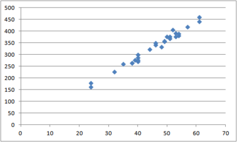
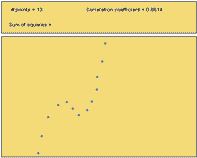
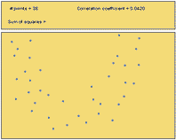
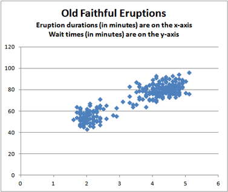

Lesson 21: Describing Bivariate Data
Optional Videos for this Lesson
Part 1
Part 2
Part 3
Part 4
Lesson Outcomes
By the end of this lesson, you should be able to:
- Create a scatterplot of bivariate data.
- Interpret the overall pattern in a scatter plot to assess linearity and direction.
- Calculate the correlation coefficient.
- Interpret the correlation coefficient, \(r\), as a measure of strength and direction of a linear relationship between two variables.
How Confident are You?
Think about a time when you walked into an exam, having prepared carefully, knowing that you would do well. On the other hand, have you ever entered an exam feeling unprepared? How have your exam scores compared to your confidence?

Shane Goodwin and other researchers examined this question. They studied factors that affect a student’s confidence on a multiple-choice mathematics exam. A group of n = 139 students in an Intermediate Algebra course (MATH 101) at BYU-Idaho participated in the study. In addition to marking their test question responses, they evaluated their confidence for each answer on a scale of 1 to 6. The confidence rating scale is summarized in the following table:
Confidence Rating
Random guess (no clue)
Very unsure
Somewhat unsure
Somewhat sure
Very sure
Certain (absolutely sure)
Confidence ratings were not relayed to the instructor, and they did not affect the grade on the exam.
For each student, the mean confidence rating was computed. This mean confidence rating and their score on the exam (out of 100 points) are given in the file MathSelfEfficacy.xlsx.
Previously, we have been dealing with one response variable at a time. Now, we have two quantitative measurements on each unit (participant). We call these data bivariate data, since there are two (bi-) variables that we are considering simultaneously.
In the past, we have summarized quantitative data by computing summary statistics. Here are a couple of statistics computed from these data:
- The mean score on the test was 74.7 points.
- The mean confidence rating was 4.4.
These statistics do not provide information about the connection between the students’ scores on the exam and their confidence. If a student feels very confident, what do the data tell us about their test score? We need a new tool to help us relate the values of two quantitative observations. When we have two quantitative measurements on a unit, we have bivariate data.
Describing Bivariate Data
Describing Form: Scatterplots
The following scatterplot illustrates the data from the Goodwin study.

Each point in the plot represents both the confidence and score of one student. The points are plotted on the X-Y coordinate plane. The position on the horizontal (X) axis represents the student’s confidence rating. The height of the point or the value on the Y-axis, represents the student’s score on the exam. (We will explore how to create a scatterplot in the next example. For now, focus on understanding the interpretation of the graph.)
The cloud of data illustrated in this scatterplot help us visualize the relationship between the student’s confidence rating and their score on the exam. Notice that the points tend to be higher as you move to the right. Students who have a high confidence rating (points further to the right) tend to have higher exam scores (higher vertical position). Similarly, students with lower confidence typically have lower exam scores. Notice that as a students’ confidence increases, their exam score tends to increase. We call this a positive association or a positive correlation.
Notice that there is variability in the responses. Consider the students who have a mean confidence rating of 5.0. The points above this number represent those students who reported a mean confidence value of about 5. There is variability in the exam scores of these students. They range from about 75 to approximately 100.
In the scatterplot, we see a cloud of data. Even though there is a considerable amount of variability in the data, the points tend to follow a line. If you squint with your eyes, you might imagine that the data look like a fat hot dog.

When the points in a scatterplot follow a straight pattern, we say that there is a linear relationship in the data. Data are considered linearly related if the points in the scatterplot follow a straight line. The points do not have to be aligned tightly to represent a linear relationship. They can be in the shape of a long skinny cucumber or a short, fat cucumber. Both broad and narrow clouds of data can be considered linear.
How to make a scatterplot
Estuarine Crocodile Data
Data for estuarine, or saltwater, crocodiles is given in the file EstuarineCrocodiles(Modified).xlsx. We will illustrate the relationship between the head length of the crocodiles and their body lengths by creating a scatterplot.
To make a scatterplot in Excel:
- Open the Math 221 Statistics Toolbox file and select the “Linear Regression” tab.
- Put the variable that you want on the x-axis (head length) in column A, labeled as the “X” column.
- Put the variable that you want on the y-axis (body length) in column B, labeled as the “Y” column. This is the value you want to predict.
- The points in the scatterplot will update with your data.
Here is the scatterplot for the estuarine crocodile data. The head length in centimeters is on the horizontal (x) axis and the body length in centimeters is on the vertical (y) axis.

Notice that there is a strong positive linear relationship between the head lengths and the body lengths of the crocodiles. That fact will be important in the next lesson.
We want to be able to describe the relationship between the variables. The first thing we look for is the shape or form observed in the scatterplot. Is it linear or nonlinear?
In many cases, the points on a scatterplot do not follow a straight line. If the data form a curved shape, e.g. a banana shape, we say that there is a nonlinear relationship in the data. The methods presented in this course do not directly apply to nonlinear data. As a professional, you may encounter nonlinear data. Math 325 Intermediate Statistical Methods includes ways to handle nonlinear relationships. If you cannot take additional statistics courses, you should consult a statistician if you want to analyze the relationships observed in nonlinear bivariate data.
In addition to the shape or the form of the data observed in the scatterplot, we need to be able to describe the direction and strength of a linear relationship in data. We use the correlation coefficient to quantify the direction and strength of the relationship. These ideas are discussed below.
Describing Direction: Scatterplots and the Correlation Coefficient
We say that the direction of data in a scatterplot is positive or there is a positive association between two variables when an increase in one variable tends to lead to an increase in the other variable. We observed a positive association in Goodwin’s confidence data.
The correlation coefficient is a number that is used to measure the direction and strength of the linear association between two variables. The direction is either positive, negative, or neither. The strength can be described as weak, moderate, or strong.
Correlation coefficients are always between \(-1\) and \(1\).
We will use software to compute the correlation coefficient. For the Goodwin data, the correlation coefficient is: \[r = 0.728\] We use the symbol \(r\) to represent the correlation coefficient. In this reading, we will explore the correlation coefficient, including its properties and interpretation.
When a positive association exists in the data, the correlation coefficient will be positive. As an example, a positive association was observed in Goodwin’s data and \(r = 0.728 > 0\).
There are many examples of positive associations. It has been demonstrated that a student’s level of motivation is positively associated with academic success . Students who are highly motivated tend to do better academically. As another example, there is a positive association between the height of a person and their weight. If someone’s height increases, we would expect that their weight would typically increase as well.
When an increase in one variable is associated with a decrease in the other variable, we say that there is a negative association between the two variables. Several studies have demonstrated that there is a negative association between the amount of time spent playing video games and academic performance. Students who spend a lot of time on video games tend to do worse in school than their peers who do not spend much time gaming.
Describing Strength: The Correlation Coefficient
We also describe the relationship between two variables as weak, moderate, or strong, depending on how close the relationship between the variables is. The strength of the linear relationship is also described in the correlation coefficient.
The correlation coefficient is always between \(-1\) and \(1\). If there is a strong positive association, the correlation coefficient will be close to \(1\). If the correlation coefficient is positive but relatively close to 0, we say there is a weak positive association in the data.
Similarly, if the correlation coefficient is close to \(-1\), we say there is a strong negative association. A weak negative association results in a correlation coefficient that is negative but close to 0.
We will not establish cut-off values to determine when a correlation goes from being weak to moderate or from moderate to strong. This depends upon the application and is very subjective.
Several scatterplots have been created, and the correlation coefficient summarizing the relationship between the two variables is presented. Study these graphs to see if you can infer some of the properties of the correlation coefficient.
|
Figure 1 |
Figure 2 |
Figure 3 |
|---|---|---|
|
|
|
|
|
\(r = -1.00\) |
\(r = -0.96\) |
\(r = -0.80\) |


|
Figure 4 |
Figure 5 |
Figure 6 |
|---|---|---|
|
|
|
|
|
\(r = -0.50\) |
\(r=0\) |
\(r = 0.50\) |


|
Figure 7 |
Figure 8 |
Figure 9 |
|---|---|---|
|
|
|
|
|
\(r = 0.80\) |
\(r = 0.96\) |
\(r = 1.00\) |


- If \(r\) is positive, and \(X\) increases, what do we expect will happen with \(Y\)? Does this represent a positive or negative association?
- If \(r\) is negative, and \(X\) increases, what do we expect will happen with \(Y\)? Does this represent a positive or negative association?
- If \(r \approx 0\), what can we conclude about the strength of the relationship between \(X\) and \(Y\)?
- If \(r \approx 1\), what can we conclude about the strength of the relationship between \(X\) and \(Y\)?
- If \(r \approx -1\), what can we conclude about the strength of the relationship between \(X\) and \(Y\)?
- If \(r = 1\), what can we conclude about the strength of the relationship between \(X\) and \(Y\)?
- If \(r = -1\), what can we conclude about the strength of the relationship between \(X\) and \(Y\)?

More on the Correlation Coefficient
Calculating the Correlation Coefficient
The correlation coefficient can easily be calculated in Excel.
Using any cell in an excel page you can calculate the Correlation coefficient. The command is = CORREL (array 1, array2). For array 1 highlight the explanatory variable (x) and for array 2 highlight the response variable (y). Here is a screen shot example of finding the correlation coefficient of the Old Faithful data.

An easier way to do this is to use the file Math 221 Statistics
Toolbox. After entering the data in the first two columns in the
Linear Regression worksheet, the correlation coefficient is given as “r”
in cell G7 of that spreadsheet.
Effect of Outliers
An outlier is any point that is very far from the others. Each of the following scatterplots shows data where there is one outlier present. Notice how one point can influence the correlation coefficient. Imagining that the outlier was removed from each of the following plots, estimate the correlation coefficient in your mind. Compare that value to the specified correlation coefficient with the outlier included.
|
Figure 10 |
Figure 11 |
Figure 12 |
|---|---|---|
|
|
|
|
|
\(r = -0.37\) |
\(r = +0.62\) |
\(r = +0.88\) |


Nonlinear Relationships
The following figures illustrate possible situations where the relationship between two variables does not follow a straight line. There can be a very strong relationship between the variables and still not have a strong correlation. Conversely, you can have a correlation coefficient that is close to zero, even though there is a perfect nonlinear association between the data.
|
Figure 13 |
Figure 14 |
|---|---|
|
|
 |
|
\(r = +0.01\) |
\(r = +0.86\) |

|
Figure 15 |
Figure 16 |
|---|---|
|
 |
|
|
\(r = +0.04\) |
\(r = +0.74\) |

- Out of Figures 13-16, which scatterplots show a very strong nonlinear relationship?
- Out of Figures 13-16, which scatterplots illustrate data with the highest correlation coefficient?
- How well does the correlation coefficient measure the strength of the nonlinear relationship between two variables?
Properties of the Correlation Coefficient
We will summarize the properties of the correlation coefficient, \(r\): - \(r\) is a number between \(-1\) and \(1\) - positive values of \(r\) imply a positive linear relationship between the two variables - negative values of \(r\) imply a negative linear relationship between the two variables - values of \(r\) close to zero suggest there is a weak correlation between the two variables - if \(r\) is close to \(1\), it is evidence of a strong positive linear relationship between the two variables - if \(r\) is close to \(-1\), there is evidence of a strong negative linear relationship between the two variables - if \(r\) equals \(1\) or \(-1\), then there is a perfect linear relationship between the two variables (the points are all in a line) - the correlation of \(X\) and \(Y\) is the same as the correlation between \(Y\) and \(X\) (i.e.there is no distinction between explanatory and response variables.) - the correlation coefficient measures the strength of the linear relationship between two variables; it does not give the strength of a nonlinear relationship, no matter how strong - the correlation coefficient is affected by outliers
Sample Statistic and Population Parameter
The correlation coefficient, \(r\), is a sample statistic. It is sometimes called the sample correlation coefficient. The value of \(r\) is computed using data. It is an estimate of the population correlation coefficient, which we will denote as \(\rho\). Usually, we do not know \(\rho\).
Predicting Old Faithful

A geyser is a hot spring that periodically erupts a mixture of hot water and steam. Old Faithful in Yellowstone National Park is the world’s most famous geyser. This geyser earned its name from the predictability of the waiting time between its eruptions. At the Old Faithful Visitors Center, there is a sign predicting when the next eruption will occur. Rangers observing the behavior of the geyser maintain this sign for the convenience of park visitors.
The amount of time between eruptions (wait time) is random. However, it can be predicted, give-or-take a reasonable error bound.
Researchers observed 272 eruptions of this geyser . The researchers recorded the duration of each eruption (in minutes) and the waiting time until the next eruption (in minutes.) The data are given in the file OldFaithful.xlsx.
- Suppose the U.S.Park Service has asked you to improve the way they predict eruptions of Old Faithful. What analyses would you conduct to better predict the wait time until the next eruption?
- Conduct the analysis you proposed in Question 1. What is your prediction for the waiting time between eruptions?
- How would you describe the shape of the distribution of the waiting times?
There appear to be two peaks in the histogram representing the waiting times. This bimodal distribution is curious. Why should there be a bimodal distribution in the duration of the eruptions? Could there be a relationship between the length of an eruption and the waiting time until the next eruption?
This can be explored using a scatterplot.
For the Old Faithful data, we plot the eruption duration on the \(X\)-axis and the waiting time before the next eruption on the \(Y\)-axis of a scatterplot.

Each point in the plot represents both the actual eruption time and the wait time until the next eruption of Old Faithful. The position of the point on the horizontal (X) axis represents the duration of the eruption, and the height of the point on the vertical (Y) axis represents the wait time for the next eruption. This helps us to visualize the relationship between the wait time and the duration of the eruption. Notice that when the wait time increases, so does the eruption duration.
- What do you observe in the scatterplot? Are there any features that draw your attention?
- Based on the scatterplot, does \(\bar x = 70.9\) minutes seem like a good estimate of the mean waiting time between eruptions?
Summary
Creating scatterplots of bivariate data allows us to visualize the data by helping us understand its shape (linear or nonlinear), direction (positive, negative, or neither), and strength (strong, moderate, or weak).
The correlation coefficient (\(r\)) is a number between \(-1\) and \(1\) that tells us the direction and strength of the linear association between two variables. A positive \(r\) corresponds to a positive association while a negative \(r\) corresponds to a negative association. A value of \(r\) closer to \(-1\) or \(1\) indicates a stronger association than a value of \(r\) closer to zero.
Copyright © 2020 Brigham Young University-Idaho. All rights reserved.